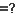

Im Menü Aktionen führt der Befehl Inhalt vergleichen  einen Inhaltsvergleich auf den ausgewählten Dateipaaren aus, um zu bestimmen, ob sie übereinstimmen.
Methoden für Inhaltsvergleiche
CRC-Vergleich vergleicht Dateien unter Verwendung ihrer CRC-Werte.
Binärvergleich vergleicht Dateien Byte für Byte.
Regelbasierter Vergleich vergleicht Dateien auf Grundlage ihrer zugeordneten Dateiformate. Sie ermöglichen Ihnen, unwichtige Unterschiede zu definieren, wie z.B. Änderungen bei Leerzeichen oder Quellcodekommentaren. Ein regelbasierter Vergleich kann zudem Unterschiede in der Dateikodierung oder in Zeilenenden ignorieren.
Ergebnisse von Inhaltsvergleichen
CRC- und Binärvergleiche liefern folgende Ergebnisse zurück:
|
Binär identisch |
Die Dateien sind exakt gleich. |
|
Binär unterschiedlich |
Mindestens ein Byte ist in den Dateien unterschiedlich. |
Regelbasierte Vergleiche haben einen integrierten Binärvergleich und liefern folgende Ergebnisse zurück:
|
Binär identisch |
Die Dateien sind exakt gleich. |
|
Regelbasiert identisch |
Die Dateien haben binäre Unterschiede, wie z.B. Zeichenkodierung, die ignoriert werden können. |
|
Unwichtige Unterschiede |
Ein regelbasierter Vergleich hat lediglich unwichtige Unterschiede festgestellt. |
Wichtige Unterschiede |
Ein regelbasierter Vergleich hat wichtige Unterschiede festgestellt. |
Wann Inhaltsvergleiche durchgeführt werden
Inhaltsvergleiche werden durchgeführt:
| • | wenn eine Ordnersitzung geladen wird, und die Sitzungseinstellungen einen automatischen Inhaltsvergleich erfordern |
| • | wenn der Inhalt vergleichen-Befehl explizit aufgerufen wird |
| • | wenn zwei Dateien in einer Dateisitzung geöffnet werden |